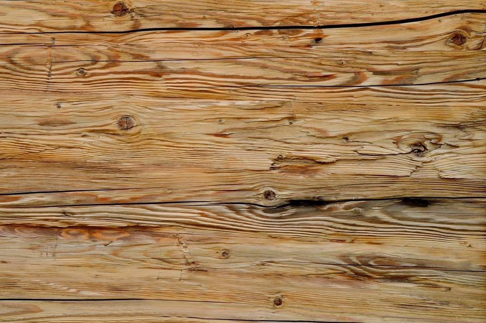
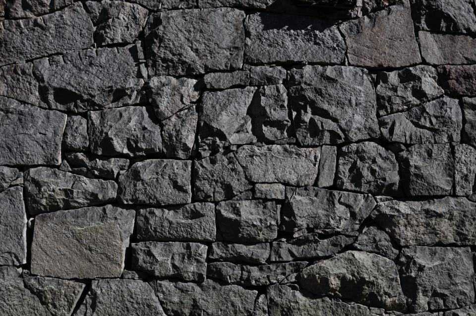

Golv vi sköter om
- Levererat

Galleria i Göteborg
3 400 kvadratmeter terrazzo under elva nätter med butikerna öppna.
- Levererat

Kungälvs skolor
Nio skolor med 38 000 kvadratmeter linoleum och plast på nytt avtal.
- Levererat

Trapphus i Vasastaden
Fem våningsplan marmor från 1890, en natt per plan.
- Levererat

Hotell vid Avenyn
Djuprengöring av 160 rum och polering av lobbyns kalksten.
- Levererat

Idrottshall i Mölndal
Sportgolv i bok mellanslipat och lackat med nya linjer under sommaruppehållet.
- Pågående

Domkyrkoförsamlingens lokaler
Femårigt avtal med fyra besök per år – första storrengöringen pågår.
Förvaltarna om golvvård på avtal
Terrazzogolvet var grått och matt. Efter elva nätter speglade det taket, och inte en enda butik behövde stänga.
Polishfritt har sparat oss både pengar och sommarjobb. Golven ser bättre ut än när de var nya.
Årsrapporten gör att vi kan budgetera golvbyten fem år framåt i stället för att bli överraskade.
Vilket golv ska vi vårda?
- Illustrationsbild
 Polerverket i siffror
Polerverket i siffrorGolvvård som eget hantverk
- 01140avtalLöpande underhållsavtal
- 02
 1,1 miljkvmGolv under vårt underhåll
1,1 miljkvmGolv under vårt underhåll - 0322golvteknikerArbetar mest nattetid
- 042 ×Längre livslängd med plan
Polerverket startades 2011 av Maria Kovač, som hade arbetat i tolv år med golvvård i ett stort städföretag. Hon såg att golven ofta förstördes av fel metod: för mycket polish, fel rondeller och starka rengöringsmedel på naturstenen. Hennes idé var ett företag som bara sysslade med golv, med tekniker som kan materialen.
Alla nyckeltal
Senaste nätterna
- 01

Terrazzogolvet i gallerian fick tillbaka sin glans
3 400 kvadratmeter terrazzo från 1972 slipades och polerades under elva nätter utan att butikerna stängde.
Läs mer - 02

Polishfria skolor i Kungälv
Nio skolor har gått över till polishfri golvvård – underhållskostnaden sjönk med 28 procent det första året.
Läs mer - 03

Marmortrappan i Vasastaden
Ett trapphus från 1890 med fem våningar kristalliserades på fem nätter.
Läs mer
Fastigheter på avtal
 Offentlig sektor
Offentlig sektorKungälvs kommun
 Fastighetsägare
FastighetsägareMölndals Idrottsfastigheter

UppdragsgivareGöteborgs domkyrkoförsamling
 Bostadsrättsförening
BostadsrättsföreningBrf Vasastaden 14
 Handel
HandelNordstadens Handelsfastigheter
 Uppdragsgivare
UppdragsgivareHotell Avenyn
 Skolfastigheter
SkolfastigheterAlingsås Skolfastigheter
Illustrationsbilder
Så är vi organiserade
- 01NattlagetHandel och kontorNattlagetTolv golvtekniker i tre lag som arbetar mellan 22 och 6 i köpcentrum, butiker och kontor.Läs mer

- 02StenverkstadenNatursten och terrazzoStenverkstadenFyra stenspecialister som slipar, polerar och reparerar marmor, kalksten och terrazzo.Läs mer

- 03Skol- och fastighetslagetOffentliga lokalerSkol- och fastighetslagetSex tekniker som sköter skolor, förskolor och kommunala lokaler, med extra bemanning under loven.Läs mer


Bli golvtekniker – ett yrke få känner till
Vi utbildar dig i golvvård, materiallära och maskiner. Nattarbete ger ob-tillägg och fyra dagars arbetsvecka.
Nattlagen äter frukost tillsammans på kontoret i Högsbo när skiftet är slut.

Hur mår era golv egentligen? Boka en golvinventering så får ni svaret i en rapport.
Boka inventering